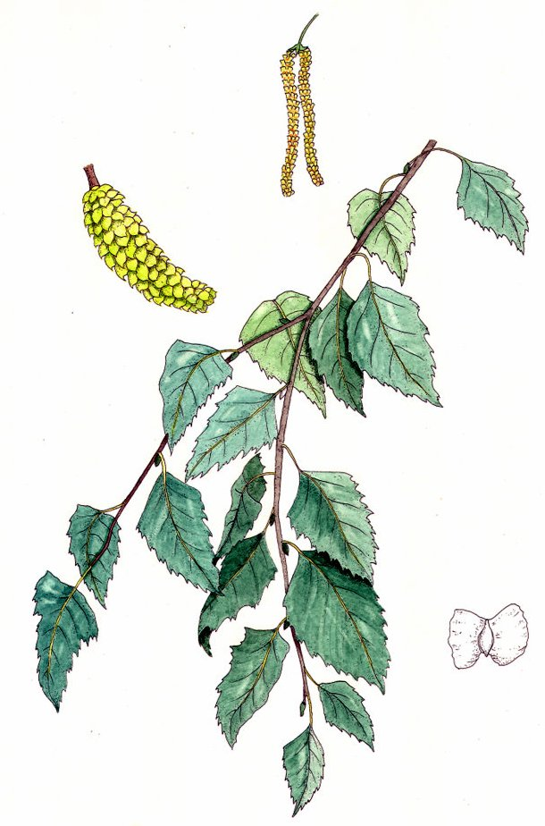

Cofrêle
curatif (infusion) - 20 po
↪ plante - montagne - été
↪ plante - montagne - été
 Cet arbre qui pousse en montagnes peut atteindre une hauteur de cinq mètres. Mais si le cofrêle est recherché, c'est pour le pollen jaune de ses fleurs qui soigne les contusions.
Cet arbre qui pousse en montagnes peut atteindre une hauteur de cinq mètres. Mais si le cofrêle est recherché, c'est pour le pollen jaune de ses fleurs qui soigne les contusions.
Les infusions de pollen de cofrêle permettent de récupérer 1d6 points de vie perdus à cause de dégâts de type contondant. Pour une blessure donnée, l'infusion ne fonctionne qu'une seule fois. Accessoirement elle est également très efficace contre les maux de tête.

Illustration reproduite avec l'aimable autorisation de Christine Achard
Illustration reproduite avec l'aimable autorisation de Christine Achard
Recueil des plantes d´AideDD